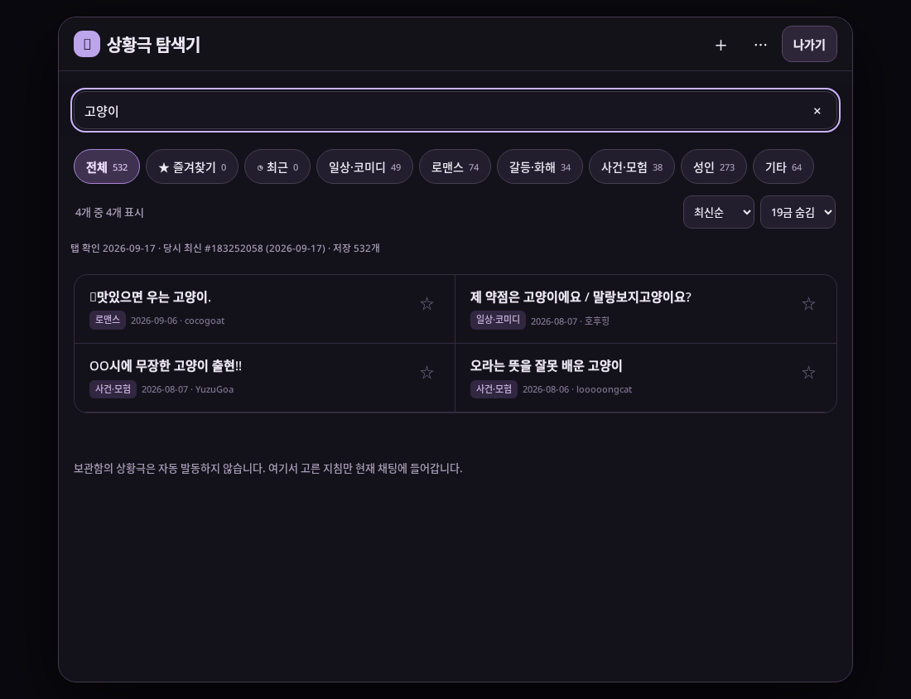
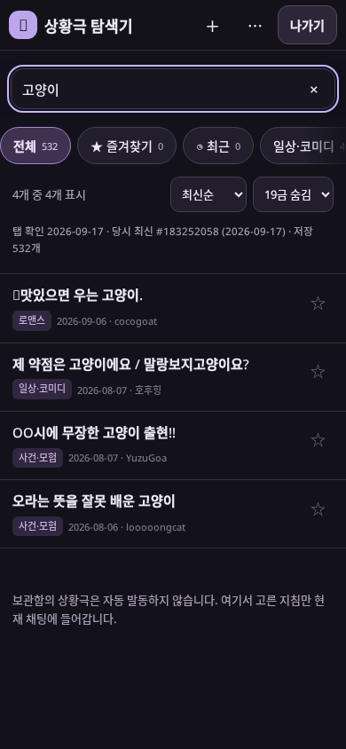
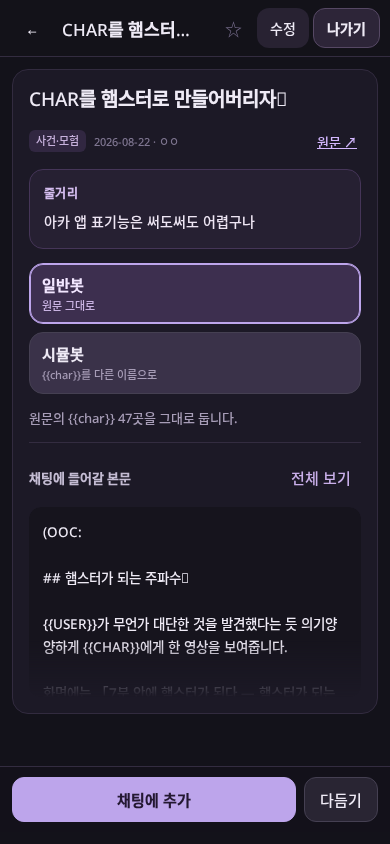

RisuAI API v3 · v1.0.0
상황극 탐색기
짧은 상황극을 검색하고 골라 현재 채팅에 지침으로 넣는 플러그인입니다. 532개 상황극이 든 상황극 서고 모듈과 함께 사용합니다.
주요 기능
| 빠른 탐색 · 검색·분류·정렬·19금 표시 설정 |
| 두 가지 모드 · 일반봇 원문 또는 시뮬봇 대상 치환 |
| 간편 입력 · 바로 추가하거나 인풋카드에서 수정 |

 |
 |
사용법
- RisuAI에서 상황극 서고 모듈과 상황극 탐색기 플러그인을 가져옵니다.
- 채팅 입력창 오른쪽 햄버거 메뉴에서 상황극 탐색기를 엽니다.
- 상황극을 고르고 일반봇 또는 시뮬봇을 선택해 채팅에 추가합니다.
공식 웹 RisuAI API v3용 · 코드 MIT License · 내장 상황극의 권리는 각 원저작자에게 있습니다.
GitHub 저장소